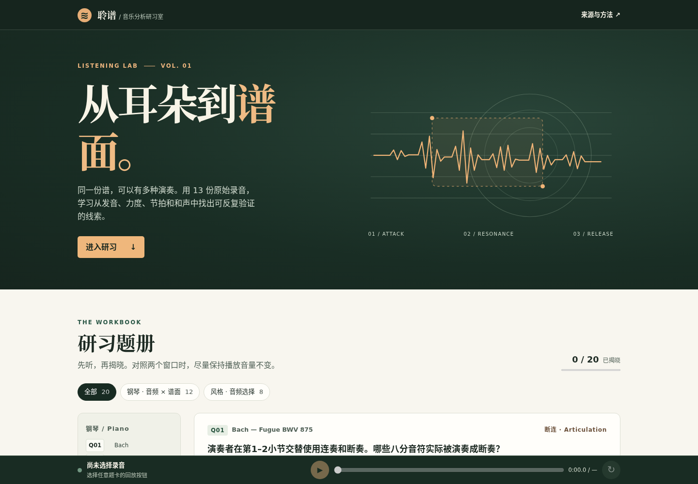

必须交付
answers.json：20题简答；保留音名、顺序、八度、小节与拍号。evidence.json：原音回放窗口、解释；联合题另给谱页及归一化标框，比较题给两处证据。site/：20张题卡、揭晓、定界回放、看谱标框、手机可读，断网可用且避免双音频。README.md：启动方式、来源、时间基准和限制。
OMNIALE / D6 / EXPERT MUSIC · HARD V2
把专业音乐问答变成可回听、可查谱、可核对证据的研习网站。问题来自已发布的人工作题，声音来自真实录音。
Sol 知识分 · 含下述格式适配
固定作者答案 · 逐题二元
独立生成 · 2026-11-23
01 / THE ASSIGNMENT
受测智能体是音乐院校的分析课助教：结合五首钢琴作品的完整演奏与总谱，解答12道听谱联合题；再聆听八段官方音乐截段，解答8道风格音乐题。问题涵盖实际断连、声部起音、弱音踏板、弹性速度、和声、调式与即兴。
answers.json：20题简答；保留音名、顺序、八度、小节与拍号。evidence.json：原音回放窗口、解释；联合题另给谱页及归一化标框，比较题给两处证据。site/：20张题卡、揭晓、定界回放、看谱标框、手机可读，断网可用且避免双音频。README.md：启动方式、来源、时间基准和限制。谱面给出书写结构，录音呈现实际演奏：谱写连奏不能证明实际听感；必须把弱音、发声顺序或弹性速度定位到正确谱页与音符。
问题在短局部事件和跨乐句比较之间切换，还要把结论做成学生能实际回听、查谱的材料。尚未做模态消融，不能声称每道题均已实验证明必须联合输入。
加载中…
02 / REAL SOURCE MATERIAL
48页钢琴谱，5首完整演奏；8段HumMusQA原作者发布的MP3。英文为来源原题，中文为辅助译文。受测输入不含作者答案、MIDI、逐音标签、源数据集仓库或现成对齐时间线。
下方五首钢琴为192 kbps MP3网页试听副本；原始WAV在冻结题包中。其余八段保持上游MP3原字节。试听转码不参与知识评分。
03 / THE SUBMITTED ARTIFACT

这是受测产物，含错误答案，不能作为标准教材。预览仅把5个WAV替换成MP3并改写媒体路径；应用代码、答案、解释及已知播放缺陷均未修复。
79个文件、约348 MB，原始交付逐项SHA256一致。结构化知识分与网站功能分别报告。
这9个失败窗口记录到了实际解码音频与正确声源，不能描述成“完全无声”。控件通过也不证明音乐解释正确。
下载未经修改的完整原交付 · 原始答案 · 原始证据
04 / FIXED-ANSWER SCORING
| 来源 | 问题 | 正确 | 知识分 |
|---|---|---|---|
| MuSP-Bench 原生 S&P | 12题 × 5分 | 4 / 12 | 20 / 60 |
| HumMusQA 官方 High | 8题 × 5分 | 5 / 8 | 25 / 40 |
| 总计 | 逐题二元 | 9 / 20 | 45 / 100 |
主政策 omni_v1使用来源类型标准化器，指定时间题允许±1秒。official_typed_exact与official_reference_exact同时报告，本轮均为45分。知识分由固定来源答案比较得到，没有LLM印象加分；网页美观与解释文字不补内容分。
本题是20题子集改编，不是两篇论文的全量复现。仅8道HumMusQA有官方High标签，12道MuSP题没有官方逐题Hard标签。单次结果不能表示稳定通过率；尚无人类音乐专家逐题听审。
05 / QUESTION-BY-QUESTION
左侧颜色表示固定答案判分。下面的原音与标框来自模型提交的证据；音乐解释和选区可能有错。独立核对播放器用于展示证据，不是对模型原网站的修复。
06 / OBSERVABLE TRAJECTORY
请求与响应字段均为gpt-6.2-sol，high reasoning，每轮最多16000输出token。真实音频由qwen3.8-omni-flash外部观察工具协助，不是Sol原生听音。沙箱只挂载公开输入与全新工作目录，禁网，未挂载作者答案或旧结果。
统一预算：180有效分钟、260轮、500动作、800图像、96听音。服务故障重试等待按冻结协议排除；正常API处理时间仍计入。服务商报告的模型ID不能独立证明底层模型身份。
展示实际工具动作、参数和返回，不展示内部推理。图像动作列出真实路径与数量，像素可通过题目谱页和实测截图复查。本轮146次图像动作中重复查看较多；runner只保留最近3条图像消息像素，可重开原图，不能把重复调用和耗时全解释成音乐理解难度。
完整223条工具轨迹JSON · 轨迹统计 · 冻结执行协议
07 / WHAT FAILED
Q01把应为断奏的3音扩成6音；Q06将作者标记的una corda答成Arpeggiation；Q10答Bbm，参考接受Gb或Ebm7。错误涉及实际处理与和声理解。
Q04为57–58而非58–59；Q08漏掉尾小节174；Q07差2秒，超过公开±1秒。按二元规则记0，但这些定位偏差与音乐概念错误性质不同。
Q13混淆double-time与metric modulation，Q15音程和Q16调式错误。Q05、Q09、Q12、Q14的辅助证据语义仍有不确定性，等待专家核查。
以上为固定作者答案对照，未冒称新增人类专家裁决。Qwen已对20/20题的实际回放与标框做辅助复核；不会据此重写作者答案或提高知识分。主知识分没有pending，语义证据与网站功能单独保留状态。
08 / SOURCES & REPRODUCTION
Milan Liessens Dujardin、Song-Ze Yu、Kevin Miao，2026。固定数据revision：ebb8fdc0d0f49d427e48b15f257fa39056b5e525。选择12道S&P原题及5部作品。
原标注／改编为CC BY-NC-SA 4.0；谱面来源ASAP/(n)ASAP、PianoCoRe，录音经ASAP来自MAESTRO，保留各来源权利声明。
Weck等，NLP4MusA 2026。官方数据DOI：10.5281/zenodo.18462524。选择8道作者Difficulty=High原题，保留干扰项并固定重排选项。
题集CC BY 4.0；8段录音各自保留Jamendo艺术家、曲名及CC许可，含NC、SA、ND限制。官方MP3截段保持原样。
逐曲来源及许可 · 完整署名 · MuSP许可 · 选题依据
| 下载 | 内容 |
|---|---|
| 冻结候选题包 · 约290 MB | 实际受测输入，完整原音、谱面、20题、模板与NOTICE，不含答案。 |
| Sol原始完整交付 · 约290 MB | 未经修复的79文件；网站、原始WAV/MP3、谱面、答案、证据与README。 |
| 本次完整报告 | 三种政策、格式拒绝、适配、网站验收、已知限制。 |
| 压缩包SHA256 · 原交付逐文件哈希 | 核对冻结题包与模型原件。 |
| 网页预览差异与媒体哈希 | 5个音频转码、1处媒体路径映射；代码及答案未修。 |
网页已公开评后答案与证据，应与未来受测输入隔离。当前页面保留本次结果，不重新生成，也不覆盖旧MuSP或URMP题包。